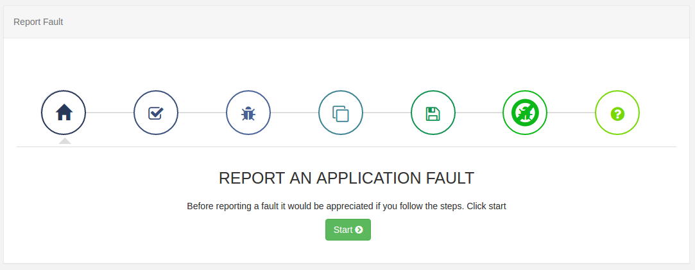

Troubleshooting
Need help? Please ask for help or advice in the Xibo Community.
It is likely that the support representative will ask you to visit the Fault page in the CMS so that some logging can be generated for your issue.
When asking for assistance it is essential that as much information as possible is included. A minimum of the version of the software you are using and the steps to recreate the problem you are having.
General questions are also welcome!
FAQ and Guides
There are lots of FAQ and Guides on our Community Forum, please visit us.
Reporting a Fault
The CMS has a central "error log" which collects messages from all components in the platform - CMS, Players, API, Maintenance, etc. Providing relevant information from the log is often the key to a support representative finding the solution to any problems.
CMS logging can be provided from the Fault page accessible from the
Administration menu. A fault wizard will be shown taking you through the steps
to collect and download a troubleshoot.zip file which can be attached to
your support request.

Raw Logs
Raw logs can be viewed in the CMS on the Advanced -> Log page. If you want to understand the contents of these logs please see understanding the log.